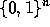

Next: How to Get CUDD
Up: CUDD: CU Decision Diagram
Previous: CUDD: CU Decision Diagram
The CUDD package provides functions to manipulate Binary Decision
Diagrams (BDDs) [5, 3],
Algebraic Decision Diagrams (ADDs)
[1], and Zero-suppressed Binary Decision
Diagrams (ZDDs)
[12]. BDDs are used to represent
switching functions; ADDs are used to
represent function from  to an arbitrary set. ZDDs
represent switching functions like BDDs;
however, they are much more efficient than BDDs when the functions to
be represented are characteristic
functions of cube sets, or in general, when the
ON-set of the function to be represented is
very sparse. They are inferior to BDDs in other cases.
The package provides a large set of operations on BDDs, ADDs, and
ZDDs, functions to convert BDDs into ADDs or ZDDs and vice versa, and
a large assortment of variable reordering methods.
The CUDD package can be used in three ways:
- As a black box . In this case, the application
program that needs to manipulate decision diagrams only uses the
exported functions of the package. The rich set of functions
included in the CUDD package allows many applications to be written
in this way. Section 3 describes how to use the
exported functions of the package. An application written in terms
of the exported functions of the package needs not concern itself
with the details of variable reordering , which may
take place behind the scenes.
Click here for a list of the
exported functions.
- As a clear box . When writing a sophisticated
application based on decision diagrams, efficiency often dictates
that some functions be implemented as direct recursive manipulation
of the diagrams, instead of being written in terms of existing
primitive functions. Section 4 explains how to add new
functions to the CUDD package. It also details how to write a
recursive function that can be interrupted by
dynamic variable reordering.
Click here for a list of the
exported and internal functions.
- Through an interface. Object-oriented languages like C++ and
Perl5 can free the programmer from the burden of memory management.
A C++ interface is included in the distribution of CUDD. It
automatically frees decision diagrams that are no longer used by the
application and overloads operators. Almost all the functionality
provided by the CUDD exported functions is available through the C++
interface, which is especially recommended for fast prototyping.
Section 5 explains how to use the interface. A Perl5
interface also exists and is ditributed separately. (See
Section 2.2.) Some applications define their own
interfaces. See for example Section 3.17.
In the following, the reader is supposed to be familiar with the basic
ideas about decision diagrams, as found, for instance, in [3].
Next: How to Get CUDD
Up: CUDD: CU Decision Diagram
Previous: CUDD: CU Decision Diagram
Fabio Somenzi
Thu Sep 24 23:44:34 MDT 1998